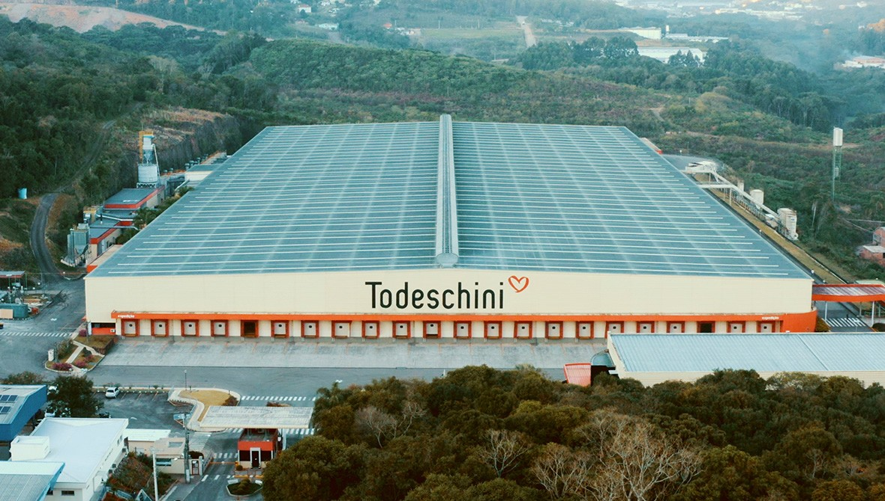

SOBRE
Tradição, excelência e
UM OLHAR PARA CADA
SONHO
Genuinamente brasileira, a Todeschini se orgulha da sua sólida reputação na produção de móveis planejados nos segmentos residencial e corporativo. São mais de 80 anos fabricando produtos com precisão e projetando espaços para todos os estilos, sonhos e dimensões, no Brasil e no exterior.
O cerne dessa história é a capacidade de unir habilidades, inovação industrial e visão de mercado, sempre buscando novas tecnologias e métodos construtivos para a produção de móveis cada vez mais personalizados.
Referenciais
ESTRATÉGICOS
Missão
Oferecer soluções em ambientes personalizados, de forma integrada à rede de distribuição, atuando com excelência e rentabilidade, promovendo a consciência ambiental e a responsabilidade social.
Visão
A Todeschini almeja a excelência em serviços e soluções em ambientes personalizados, mantendo–se líder no seu mercado de atuação com a marca preferida do Brasil, tendo toda a rede de lojas operando com rentabilidade e solidez e conquistando, assim, crescimento contínuo e sustentável de sua receita e de seus lucros.
Negócio
Conforto em ambientes personalizados.
Propósito
Empresa sólida, com qualidade de vida e sucesso compartilhado.
Parque
FABRIL
Hoje, a Todeschini é uma das maiores fabricantes de móveis planejados da América Latina. Com mais de 700 colaboradores diretos e uma planta industrial de 54.000 m², a indústria é equipada com tecnologia de ponta. Tudo para criar produtos de alto padrão, com ambientes apaixonantes e personalizados para realizar o sonho de cada cliente.
A gestão profissional, a ampliação do parque fabril em Bento Gonçalves (RS) e a capacidade de responder às mudanças da vida contemporânea continuam garantindo a expansão da Todeschini até os dias atuais.
